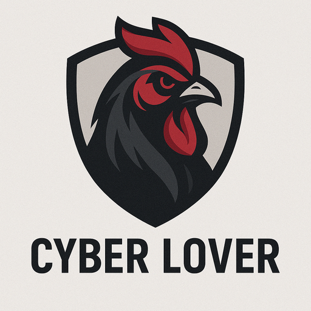
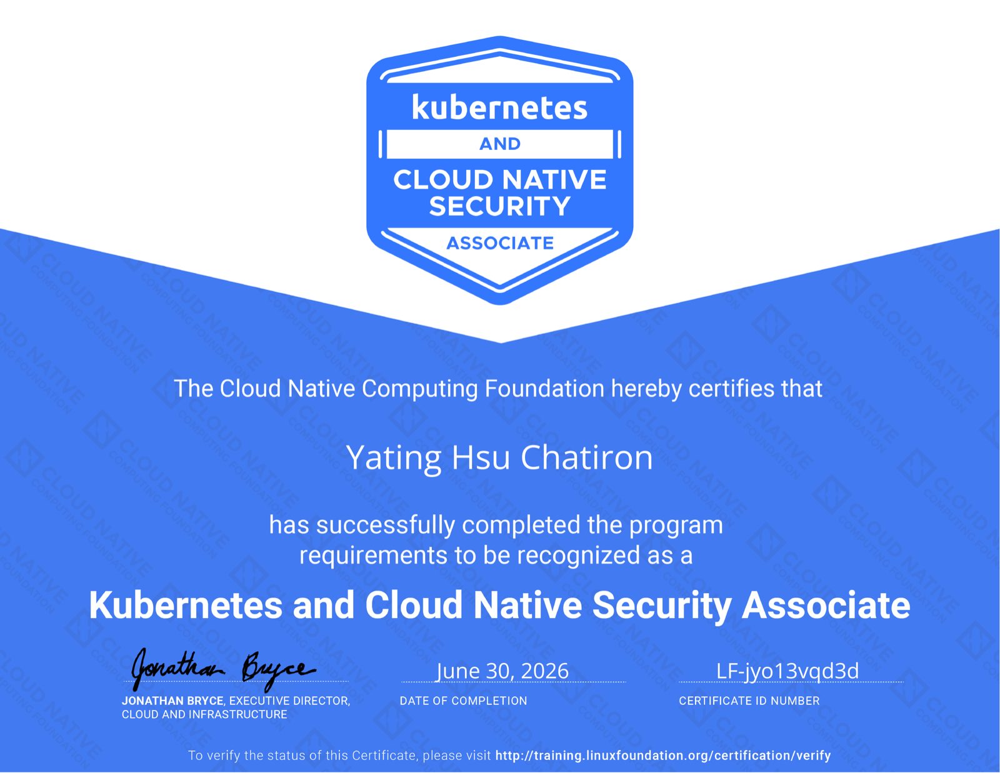
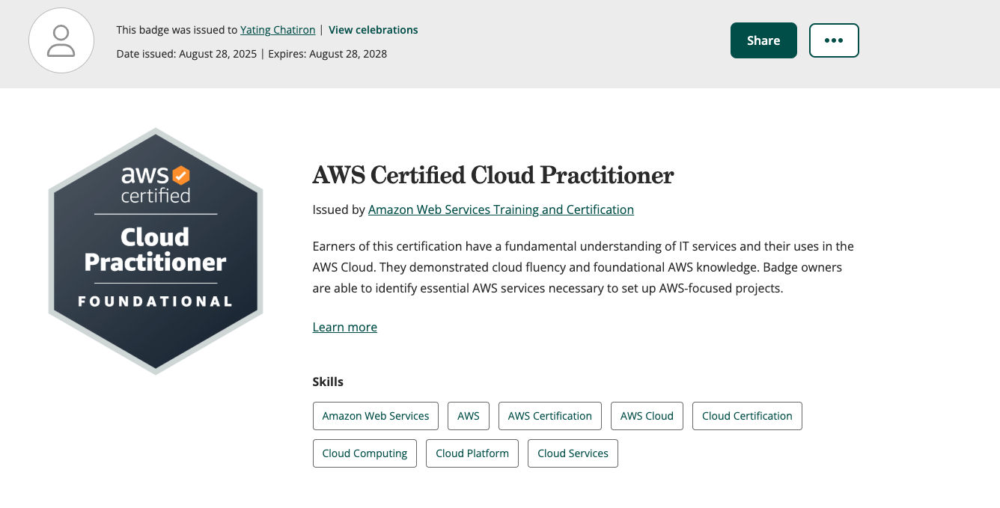
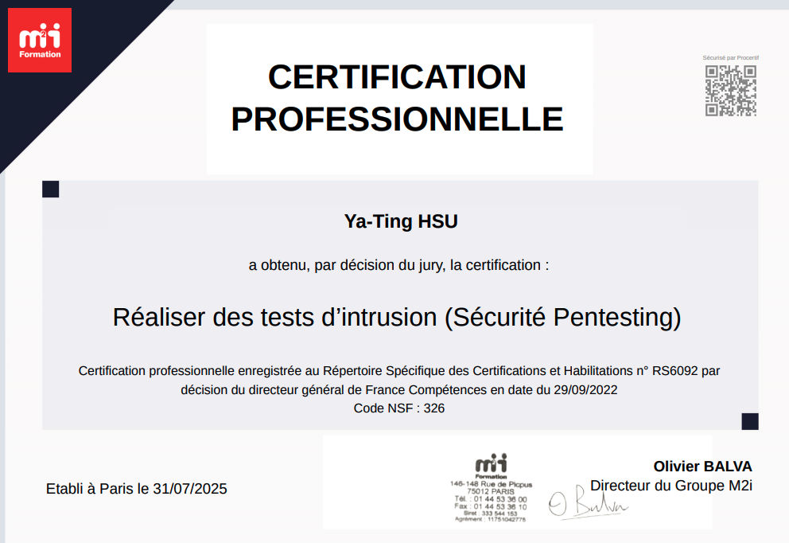
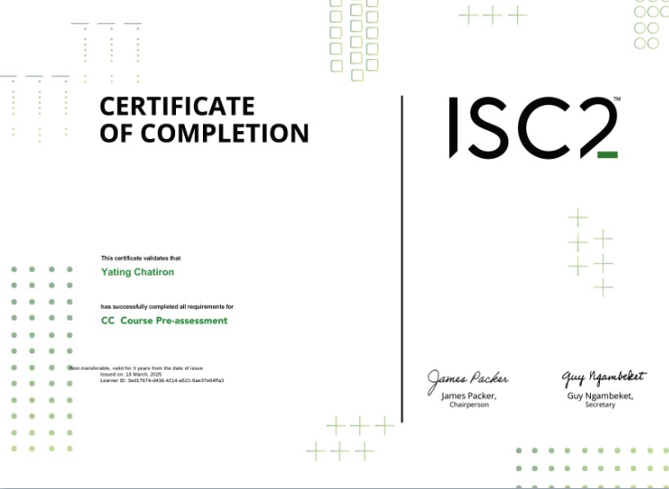
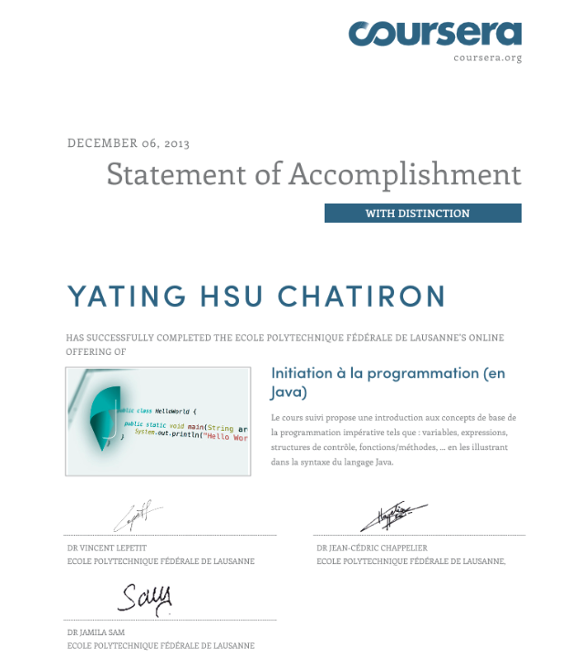

About Me
DevOps & Cloud Infrastructure Engineer — Healthcare Specialist
Hi, I’m Yating Chatiron, a Senior DevOps Engineer with 17+ years of experience in full-stack engineering and cloud infrastructure. Since 2022, I’ve specialized in DevOps and cloud architecture for the healthcare sector — an environment where criticality, compliance, and service continuity leave absolutely no room for error.
What I Do Today
Infrastructure as Code | Kubernetes & GitOps | Multi-Cloud (AWS/GCP/Azure)
- ✅ Zero-downtime deployments (Blue/Green, GitOps via ArgoCD)
- ✅ Shift-left security (Prisma Cloud, Trivy, SBOM scanning)
- ✅ Critical observability (Grafana, RabbitMQ alerting N1/N2/N3)
- ✅ HDS/ISO27001 compliance throughout the deployment lifecycle
Core stack: Kubernetes · Terraform · Helm · ArgoCD · GitHub Actions · Vault · PostgreSQL · Go/Node.js/Python
Why Healthcare?
In 2023, I discovered that healthcare isn’t "just" tech.
Every deployment directly affects doctors, patients, and medical decisions. An incident means a rescheduled surgery or a delayed diagnosis. That responsibility fascinated me — and changed me.
- • 5+ years of e-health experience (Biogroup, ITEKCOM, Livemed’s)
- • Deep understanding of the domain (HDS, GDPR, sensitive data, critical SLAs)
- • Expertise in cross-functional coordination between dev, infra, data, and clinical teams
An Atypical Journey (But a Logical One)
🇹🇼 Taiwan → Graphic Design
🇺🇸 Boston (5 years) → Full-Stack Engineer (creativity → automation → code)
🇫🇷 France (since 2021) → DevOps + Healthcare Infrastructure
Across these three worlds, I’ve built:
- • Extreme adaptability (startups, scale-ups, heavy regulation)
- • Multilingualism (Native Chinese · English · French · Japanese N1)
- • Cross-cultural engineering mindset (no single "right way" of doing things)
What truly shifted: realizing that the real complexity isn’t the code — it’s the human stakes, business constraints, and trust. Everything else is details.
Currently Building
Cybersecurity (Certifications: AWS CLF, NRS6092 Pentesting, ISC2)
Security isn’t an "add-on" to infrastructure — it’s the foundation. That’s what drives my growing interest in pentesting and threat modeling.
What I’m Looking For
- Own the infrastructure (not just deploy)
- Mentor junior DevOps/SRE engineers
- Work on what matters (healthcare, fintech, critical data)
- Keep learning (data platforms, advanced observability)
Freelance Mission
Now in MissionTech Lead · Cloud & DevSecOps Architecture — Panieer
Smart Lockers & IoT · La Réunion · Freelance
Architecture and DevSecOps lead for Panieer, a connected smart-locker network for merchants, marketplaces and carriers across La Réunion. I design the AWS platform and partner APIs, integrate the locker management system and payment flows, and build security in from day one.
- Cloud & CI/CD: AWS (EC2, S3, Secrets Manager); pipelines with SAST, dependency and secret scanning; separate dev and prod environments.
- API security: HMAC-signed webhooks, OAuth2 client credentials for partner systems, role-based access with PostgreSQL row-level security, full audit trail.
- IoT & alarm integration: a bridge to a remote monitoring centre over SIA DC-09 / Contact ID (AES), with an append-only alarm log.
- Payments: Stripe Connect architecture with SEPA direct debit and separate mandates, designed to meet the legal requirements.
- Security by design: threat modeling, least privilege, GDPR data minimisation, and field and incident runbooks.
Freelance mission alongside my main role.
Freelance Mission
Now in MissionHealthcare Penetration Tester
Healthcare Ethical Hacker · Clinical Info-Sec Specialist · Freelance
Authorized penetration testing on clinical networks, web/mobile apps, and cloud infrastructure — plus security assessments of connected medical devices (IoMT: infusion pumps, patient monitors, imaging systems). Methodology aligned with healthcare compliance frameworks (HDS, HIPAA, GDPR, NIST), with clear remediation reports for IT teams and healthcare leadership.
Parallel practice — freelance cybersecurity consulting, not primary employment
I believe in: simple infra, boring code, strong culture, technical humility.
Experience
Tech Lead · Cloud & DevSecOps Architecture – Panieer (Freelance)
ActiveMay 2025 – Present · Freelance
- Architecture and DevSecOps lead for Panieer, a connected smart-locker network for merchants, marketplaces and carriers across La Réunion — AWS platform, partner APIs, locker management system and payment flows, with security built in from day one.
- Cloud & CI/CD: AWS (EC2, S3, Secrets Manager); pipelines with SAST, dependency and secret scanning; separate dev and prod environments.
- API security: HMAC-signed webhooks, OAuth2 client credentials for partner systems, role-based access with PostgreSQL row-level security, full audit trail.
- IoT & alarm integration: a bridge to a remote monitoring centre over SIA DC-09 / Contact ID (AES), with an append-only alarm log.
- Payments: Stripe Connect architecture with SEPA direct debit and separate mandates, designed to meet the legal requirements.
- Security by design: threat modeling, least privilege, GDPR data minimisation, and field and incident runbooks.
Freelance mission alongside my main role.
Tech Lead & DevOps Engineer – Fortil
October 2025 – April 2026
- Technical lead across dev, infra, and ops teams on a multi-application health platform (28+ sites); drove architecture decisions on GitOps strategy, secrets management, and deployment pipelines.
- Built a full GitOps CI/CD chain (GitHub Actions, Helm, ArgoCD, Vault, Harbor), replacing manual deployments and integrating shift-left security scanners (Prisma, Trivy, CVE).
- Debugged RabbitMQ deadlocks on a multi-component stack (Node-RED + Workers + Go connector); refactored the Go connector with a replay and business-comparison system over ~1M rows.
- Reduced Kubernetes Job migration time from several hours to under 10 minutes; refactored cron jobs across 5 microservices (TypeScript/Next.js), cutting processing time from 8h to 1h.
- Deployed Grafana/RabbitMQ dashboards and N1/N2/N3 alerting across 28+ sites, replacing PRTG with a more flexible open-source solution.
- Established coding standards, code review processes, and Blue/Green deployment with instant rollback and automated backups.
Tech Lead DevOps - Budhapp
September 2024 - Mars 2025
- Developed Animalink, a medical platform, with scalable infrastructure on GCP.
- Integrated blockchain DeFi solutions, reducing transaction costs by 25%.
- Automated CI/CD pipelines on GKE, cutting deployment time by 35%.
- Used LLM AI (Claude Sonnet 3.5 & ChatGPT) for project automation.
R&D Engineer - Groupe Itekcom
June 2023 - May 2024
- Built medical prescription modules for e-commerce platforms in healthcare.
- Managed HDS servers on AWS with 99.9% uptime.
- Optimized Prestashop, increasing sales by 20%.
Full Stack Engineer - Livmed's
June 2022 - March 2023
- Developed a WebSocket-based service for real-time communication in a medicine delivery app.
- Optimized Google Maps API requests, reducing costs by 25%.
- Mentored interns and established coding best practices.
Certificates

Kubernetes and Cloud Native Security Associate (KCSA) - CNCF/Linux Foundation
June 30, 2026

AWS Certified Cloud Practitioner CLF-C02
Aout 28, 2025

CertificateNRS6092 Cyber Sécurité Pentesting
Juillet 31, 2025

ISC2 Certification
April 12, 2025
Cybernin Certification
Mars 27, 2025
Python certificates - Greate Learning
April 30, 2024

Java certificats - Ecole Polytechnique federale de lausanne
June 30, 2012
CS50 Computer Science - Harvard University
April 30, 2012
Skills
Languages
PHP, Python, JavaScript, Java, HTML, Golang
Frameworks
Symfony, Laravel, React, Angular, ASP.NET
DevOps & CI/CD
Docker, Kubernetes, Terraform, Azure, AWS, GCP, OVH, ArgoCD, GitOps, GitHub Actions, GitLab CI
Monitoring
Prometheus, Grafana, Kafka, Datadog, Zabbix
Databases
SQL, MySQL, PostgreSQL, MongoDB, Firebase, GraphQL
Cybersecurity
OWASP, Kali Linux, Metasploit, Burp Suite, Wireshark, Nmap, SSL/TLS, API Security, Pentesting, Cloud Security
Recent Blogs